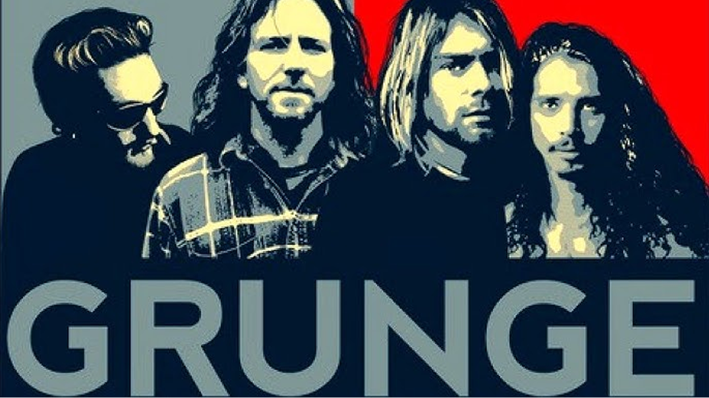

GRUNGE
Es un subgénero musical derivado del rock alternativo, cuyo nombre proviene del término grungy, un vocablo popular usado en la lengua inglesa para decir ‘sucio’.
El grunge surge a finales de la década de 1980 en Seattle, estado Washington, razón por la que se conoce también como "sonido de Seattle". Influenciado en diferentes géneros musicales, entre los que se pueden mencionar el sludge metal, el punk, el hard rock, el hardcore y el noise rock.
Se caracteriza por el uso de voz gutural, melodías repetitivas, protagonismo de la guitarra distorsionada, la presencia de una batería fuerte y marcada y letras que expresan desilusión, frustración, tristeza, depresión y apatía. Entre sus representantes más destacados se encuentran el grupo Nirvana, Pearl Jam, Soundgarden, Green River, Stone Temple Pilots, Alice in Chains, The Melvins y Mudhoney. Los dos primeros fueron los protagonistas de la etapa de lanzamiento del género en los medios radiofónicos a principios de los años 90, momento en el que el grunge alcanzó su máxima popularidad internacional.
El grunge como género musical tuvo un camino muy corto, pues hacia finales de la década el grunge empezó a declinar. Una de las razones fueron las muchas propuestas musicales que reaccionaron contra su estética y espíritu.
